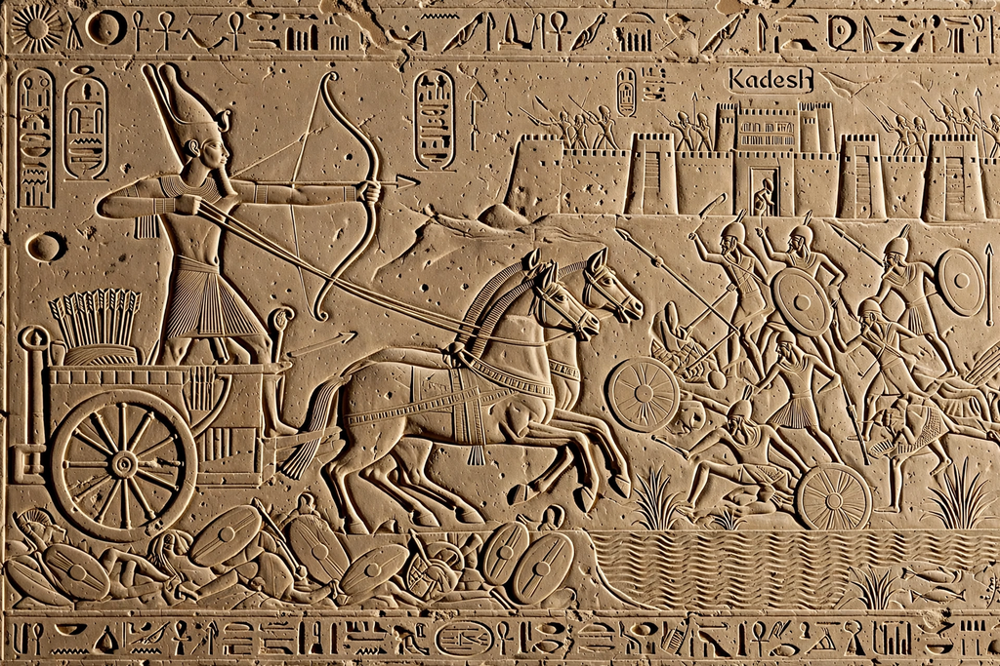

Battle of Kadesh

The Battle of Kadesh took place between the forces of the New Kingdom of Egypt under Ramesses II and the Hittite Empire under Muwatalli II near the city of Kadesh on the Orontes River, in what is now Syria. Conventionally dated to 1274 BC, it is the earliest battle in recorded history for which details of tactics and formations are known, and it probably involved the largest chariot battle ever fought, with some 5,000–6,000 chariots.
The battle
Ramesses marched north with four divisions named for the gods Amun, Ra, Ptah and Seth. Deceived by two Hittite spies posing as deserters, he camped northwest of Kadesh believing the enemy far away, while Muwatalli's army lay concealed behind the city. The Hittite chariots burst out and shattered the marching Ra division, then attacked Ramesses' camp. The battle turned when Ramesses rallied his forces and the timely arrival of the Ne'arin troops from the coast, followed by the Ptah division, drove the Hittites back across the river.
Outcome and aftermath
Both sides claimed victory: Ramesses celebrated Kadesh as a personal triumph in inscriptions and reliefs across Egypt — the famous "Poem of Pentaur" — but strategically the Hittites held Kadesh and even advanced south toward Damascus. Fifteen years later, in 1258 BC, Ramesses and Hattusili III concluded the Egyptian–Hittite peace treaty, the earliest surviving international peace treaty, a copy of which hangs at the United Nations headquarters.
See also: Ramesses II, Hittites, Nefertari.